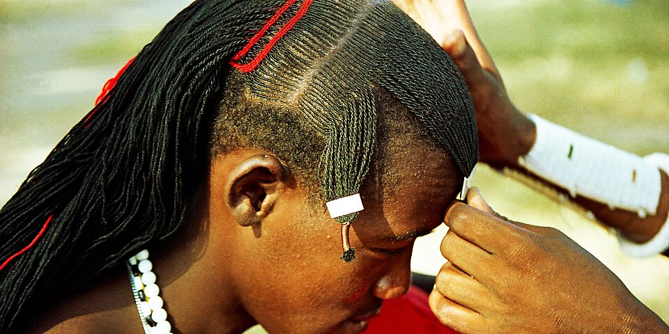
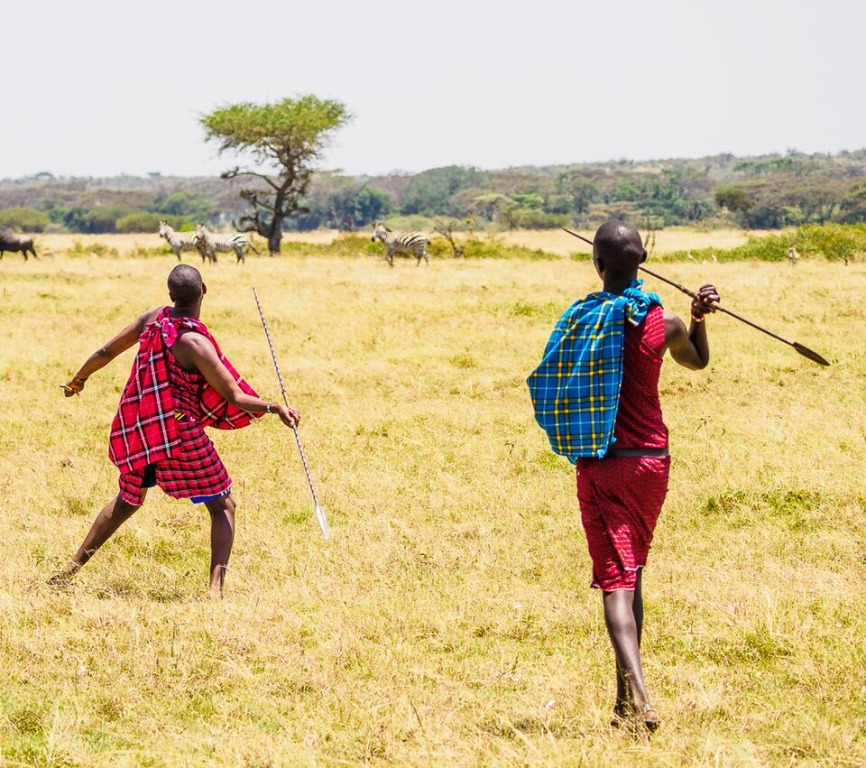
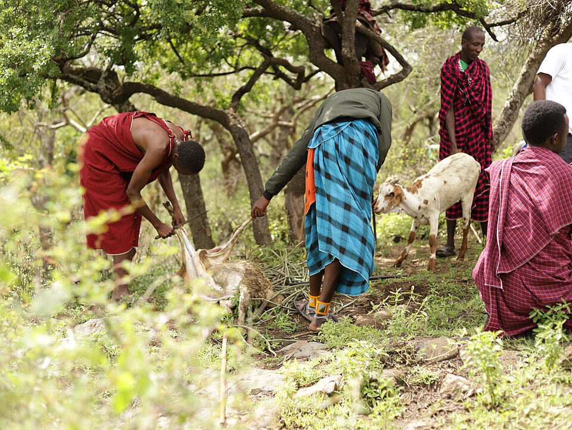

Rift Valley · 04
The Maasai
A living archive of ceremony, cattle, colour and the open grasslands.
A living profile
Colour, courage and continuity
Follow the Maasai story through beadwork, ceremony, pastoral knowledge and community.
HeartlandRift ValleyGrasslands across southern Kenya
LanguageMaaA Southern Nilotic language
LivelihoodsPastoralismCattle, goats and mobile herding knowledge
AdornmentBeadworkColour, identity and social meaning



Beadwork, oral history, age-set traditions and pastoral knowledge form a rich cultural language that continues to evolve. Maasai communities are diverse, contemporary and connected across national borders.
What to explore
Look beyond the iconic image to the knowledge systems and everyday lives behind it.
- Pastoral knowledge and care for livestock
- Age-set systems, ceremony and social learning
- Beadwork as identity, relationship and design